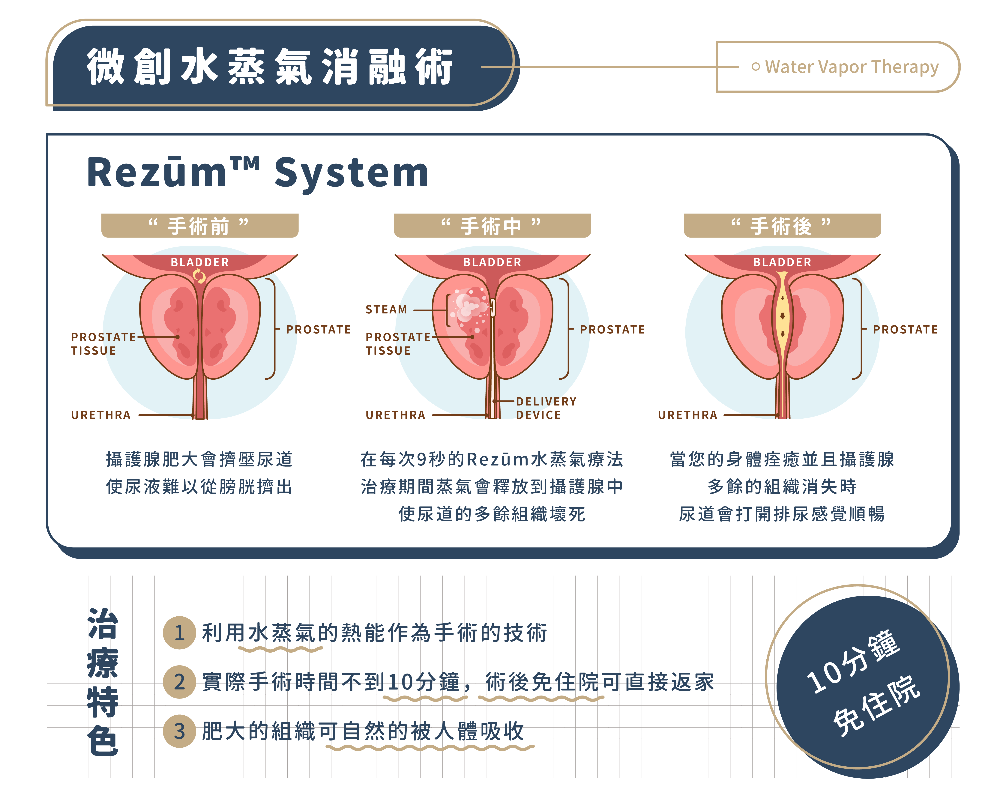
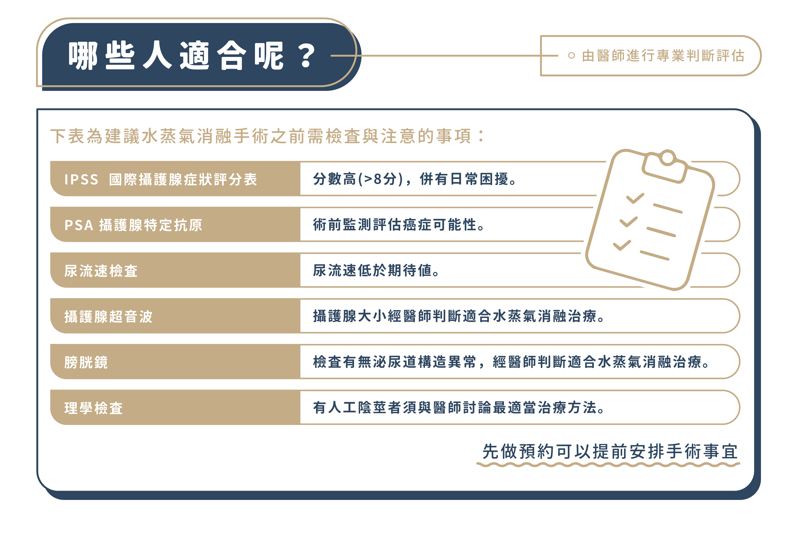
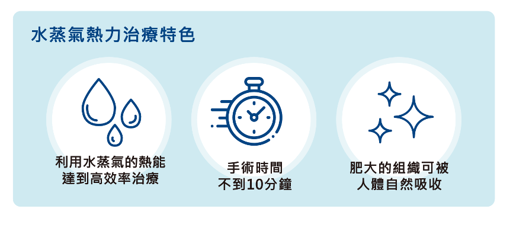
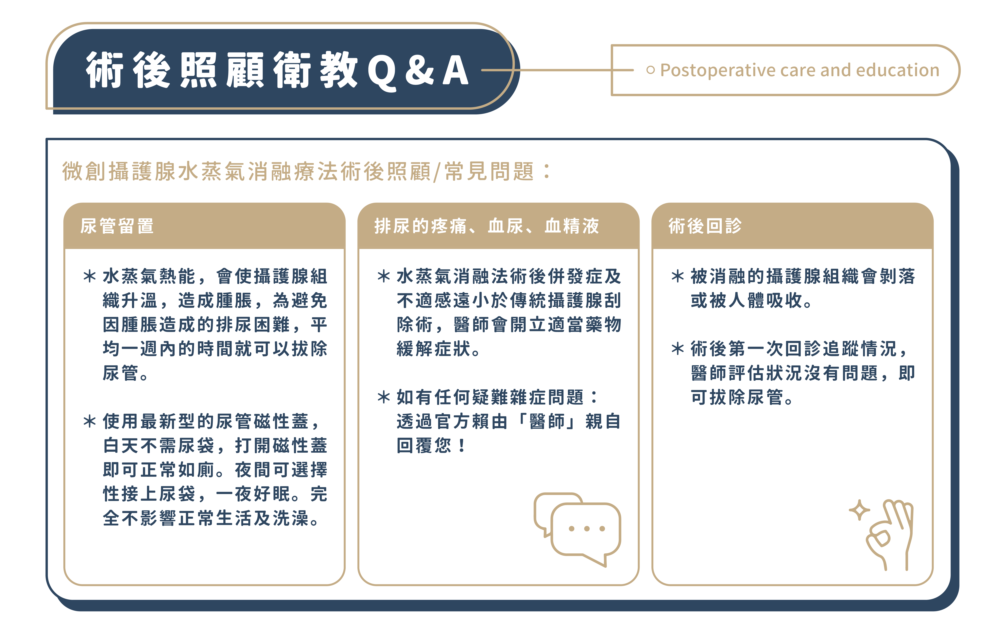

陳偉傑 醫師
『創造非凡精彩人生』
健康，其實是一個動詞，需要通過努力與踏實砌成的動詞，很多人會說奮鬥不一定會成功，但我們要說：「不奮鬥，絕對失敗」只有奮鬥過的人生，才能不留遺憾、才能更加精彩也才能至善至美。

隨著年事已高，「攝護腺肥大」困擾著許多男性，排尿困難、尿液滯留是許多人說不出口的痛！擔心傳統雷射手術對心血管疾病、高齡患者的手術風險，難道就只能使用導尿管，過著餘下不方便的歲月？ 水蒸氣消融 （Rezum）的問世是男性救星，主打「預防性醫療」概念，訴求簡單、快速、有效、回春，讓正值中壯年的您不僅可以藉由它保養攝護腺，更可以避免晚年攝護腺肥大的困擾。針對高齡與高風險患者，Rezum 的高安全和低侵入性，能讓您無痛擺脫夜半解尿滴滴漏到天明的惡夢！
攝護腺水蒸氣消融手術是一種專門針對攝護腺肥大（BPH）的低侵入治療方式。此技術利用特殊器械在麻醉下順著尿道將高達 103°C 的水蒸氣以細針多次注入攝護腺內，水蒸氣在體內會冷卻下降變成水，而釋放的熱能可以破壞肥大的組織，被破壞的細胞會在 1-3 個月內逐漸被人體吸收，從而緩解症狀。

圖片來源：Rezum 治療衛教手冊


圖片來源：Rezum 治療衛教手冊
| 比較項目 | 水蒸氣攝護腺消融術(Rezum) | 雷射剜除手術 | 綠光雷射汽化 | 攝護腺擴開術(Urolift) |
|---|---|---|---|---|
| 手術目的 | 保養/治療 | 治療 | 治療 | 保養/治療 |
| 手術原理 | 透過器械注入高溫蒸氣，讓組織自行壞死脫落。 | 用雷射光精確切割多餘組織，將其剝離。 | 雷射光照射攝護腺組織，讓組織汽化消失。 | 使用微小植入物將攝護腺肥大處拉開，讓組織隨著時間自行萎縮。 |
| 手術時間 | 約10分鐘 | 約60分鐘 | 約40-70分鐘 | 約15-30分鐘 |
| 適用IPSS等級* | 高於8分 | 高於19分 | 高於19分 | 高於8分 |
| 尿管置放期 | 3-7 天 | 1~2 天 | 1~2 天 | 0-1 天 |
| 優點 | 手術風險低 手術後併發症低 可不需住院 | 效果快速 復發機率低 | 出血風險小 | 手術風險低 效果快速 可不需放尿管 可不需住院 |
| 缺點 | 尿管置放時間稍長 | 逆行性射精 併發症風險* | 組織清除不乾淨 逆行性射精併發症風險* | 前列腺體積限 30 至 80 立方厘米。 |
註：逆行性射精：指的是有射精的感覺，但沒有精液射出的現象。此現象通常是精液逆行至膀胱，並不會影響健康跟身體，詳細狀況醫師將會做專業評估。
註：輕重程度以 IPSS 評估表評估：分數總和 0-7 分為輕度症狀；分數總和 8-19 分為中度症狀；分數總和 20-35 分以上為重度症狀。

醫護團隊會給予專業衛教及術後照護知識，告知術後正常現象以及提醒異常狀況為何。 約一週左右回診將尿管移除，等待被治療的攝護腺組織自行萎縮吸收後即可，在這過程中可以感受到排尿症狀逐漸進步。 3 個月後可利用超音波檢查攝護腺縮小的情況。 若有疑問可第一時間洽詢官方line帳號，醫師親自回覆 Line 訊息，提供患者安心與照護知識。
陳偉傑 醫師
『創造非凡精彩人生』
健康，其實是一個動詞，需要通過努力與踏實砌成的動詞，很多人會說奮鬥不一定會成功，但我們要說：「不奮鬥，絕對失敗」只有奮鬥過的人生，才能不留遺憾、才能更加精彩也才能至善至美。
羅詩修 醫師
『捍衛男性泌密健康』
泌密健康，就四個字，但它並不會讓你一輩子都過得那麼容易，轉機就在於你堅強的那一刻，你的人生，會因為你的泌密健康，過得更性福美滿，也過得更加精彩

【本資訊無法取代醫師親自關心您；若有副作用等使用問題，請洽醫師諮詢。】
捷運
橘線(中和新蘆線)行天宮站的4號出口，出站後右轉步行40秒就可以看到津久診所的大招牌，搭電梯上3樓。
開車
1.台灣聯通停車場-將捷二場(停車塔，眾多信用卡可停車折抵): 台北市中山區松江路336號
2.聯邦佳佳大樓停車場(地下平面停車場): 台北市中山區松江路235巷22號
坐公車
1.捷運行天宮站(松江路) 109,1550A,203,214, 214直,222,26,277,279,280,280直,41,49,5,5203A,612,676,9069,9069A,945, 松江新生幹線,林口-台北長庚醫院,紅57
2. 松江新村 214, 214直,286副,49,9069,9069A,945
3. 民權松江路口 1841,1841A,1842,1842A,225,225區,5250,5250A,617,617副,63,685,688,801,803,內科通勤專車18,敦化幹線，民權幹線,紅29,紅31